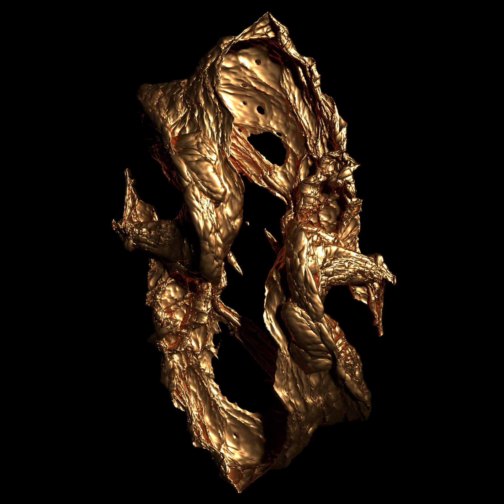
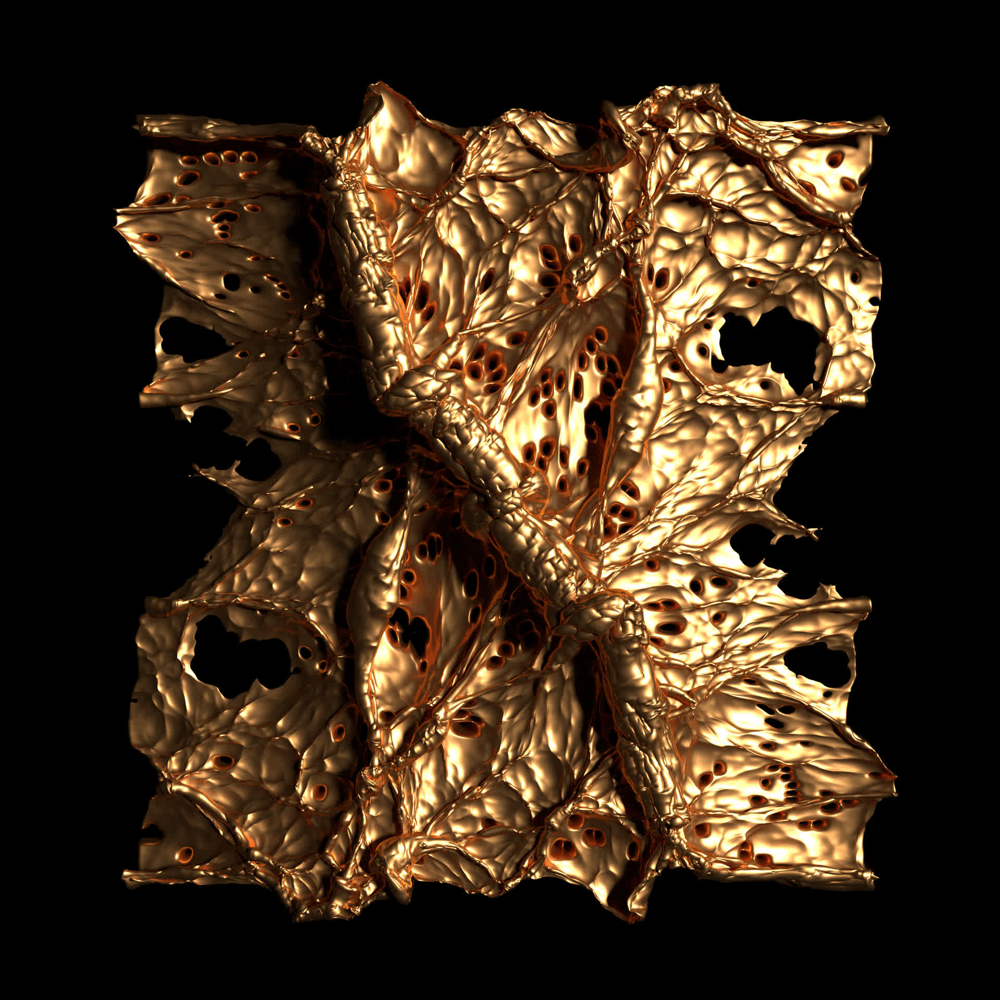
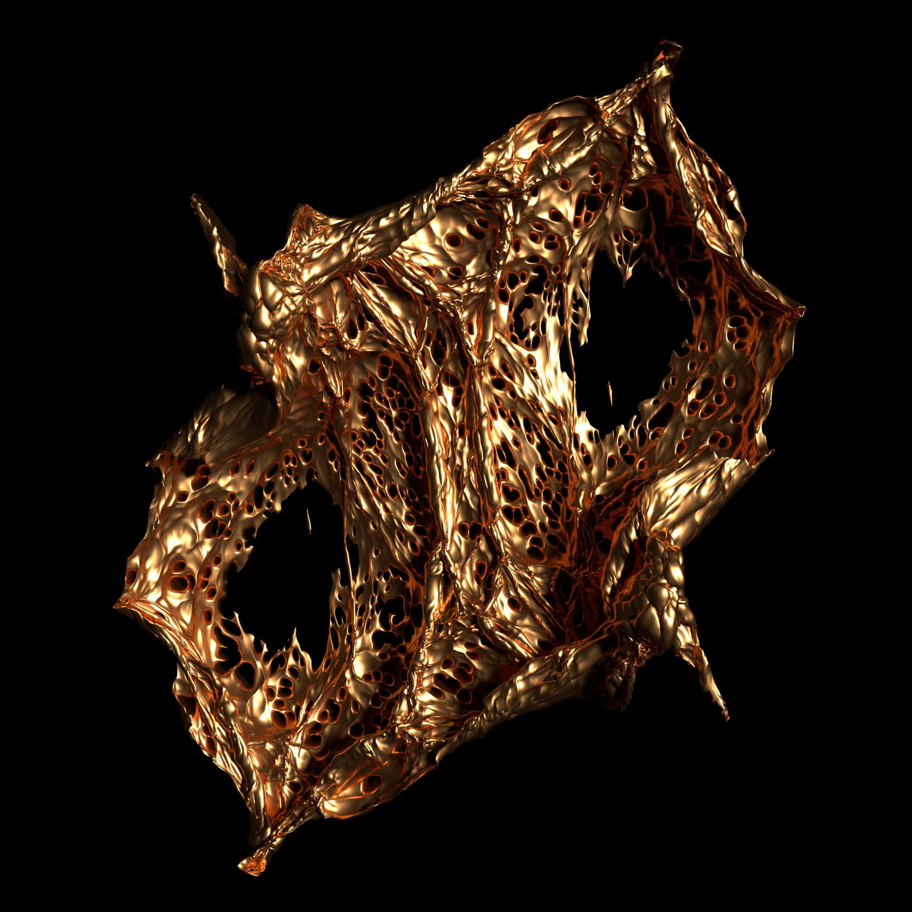
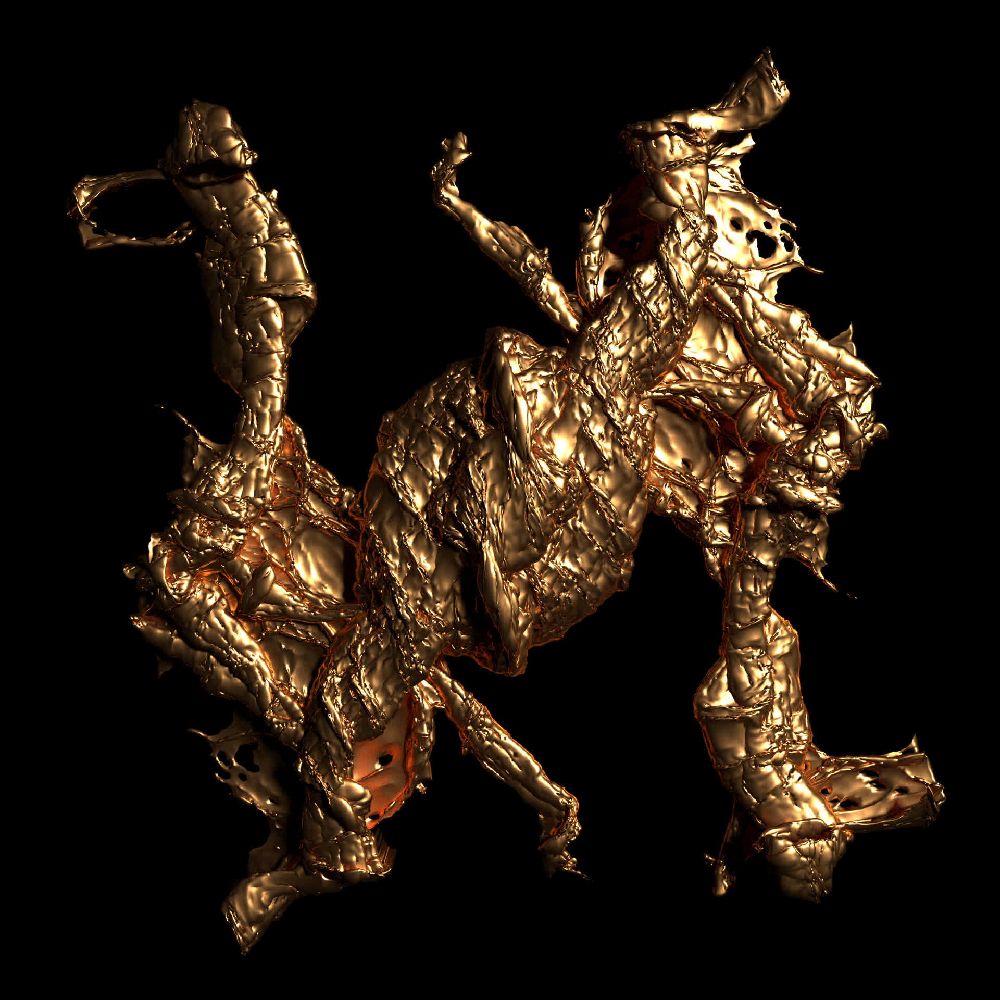

In visual/physical art & performances I'm interested in
æsthetics of inorganic and ecclesiastical art,
particularly focusing on interactive, immersive and emergent systems.
Slices of the Ocean [2019]




Four images generated by overdriving a water simulation algorithm. The simulated surface is molded
and sliced, freezing its momentary state forever - like a Shroud of Turin with the algorithmic face
of Poseidon imprinted on a fine cloth.
A series of small 3D-printed algorithmic sculptures: Using various techniques borrowed from machine learning and geometry,
I'm looking for ways to embed the idea of relics and spiritual symbols in the chaotic textures of generative art.
⌀ approx. 21cm — PLA, epoxy coating, chrome
Alluvial Sharawadji [2018]
“Alluvial Sharawadji” is a crowdsourced interactive artwork/workshop by Tim Cowlishaw and Jakub Fiala for Eufónic festival 2018 combining collaborative field recording with low-cost, ubiquitous web technologies to communicate the experience of a local sound environment to audiences who are distant in both time and space.
Made By Machine: When AI met the Archive (BBC) [2018]
Research, prototyping and software for this experimental TV documentary
produced at BBC Research & Development in collaboration with BBC Four. Broadcast on
BBC Four in September 2018.
We used several machine learning techniques including
Densecap, word2vec and LSTM networks
to analyse BBC archive material and built a “generative editor” system which
produced sequences of clips traversing the various feature spaces.
This generative 3D series is a homage to several great bearers
of the surname Delaunay —
Sonia, who cofounded
the Orphist art movement with her husband; and
Boris, who invented
Delaunay triangulation, widely used in computer graphics.
In this series, I applied Delaunay triangulation to random vertex fields and
spherical meshes, often exploiting the floating point errors to create complexity.
I was inspired by Buddhist symbolism – abstract shapes such as the Gankyil or
the dharmachakra. By replacing the faces of the mesh with spheres or tori,
complex shapes arise reminiscent of baroque architecture.
Blender Cycles, Sverchok3D plugin
A series of algorithmically produced 3D models exploring the symbolic
and generative properties of spherical forms. Each model is the product of
vector multiplication of two basic sphere meshes under various transformations
and conditions. Blender Cycles, Sverchok3D plugin
A series of algorithmically produced 3D experiments with vector multiplication of high-
and low-polygon shapes, with elements of stochasticity. By applying mesh modifiers
the hidden internal complexity of the result is exposed, allowing digital light to
interact with the surface details. The overall shape of the models is not always
apparent: their three-dimensional essence is ultimately projected onto a distorting
two-dimensional plane. Blender Cycles, Sverchok3D plugin
Together with Henry Cooke and Tim Cowlishaw of BBC R&D we
developed an experimental Alexa skill for Nozomu Matsumoto and Nile Koetting's
installation 'Climatotherapy', exhibited as part of Somerset House ASSEMBLY
in November 2018.
Final dissertation work for the BMus in Music Computing at Goldsmiths. Available in PDF at academia.edu.
Installation piece built on research in sculptural encoding of music, exploring the human experiences of mystery, awe and religious reverence and focusing on the concepts of meaning in relics and cultural artefacts, aesthetics of monolithic art.
The Artist's Rite [2015]
Spin-off performance work based on the aesthetics and technology of Ex Caelis Oblata. In this performance, the artist gradually destroys a precious sculpture of their own making. Presented at PureGold Festival 2015. Max/MSP, Jitter, openFrameworks, Nintendo Wii, web camera, laser module, piezo microphone, modroc, cleaver, tape.
Light Experiments [2015]
A series of visual experiments with wire mesh and laser light, collaboration with Jasmin Michalcakova.